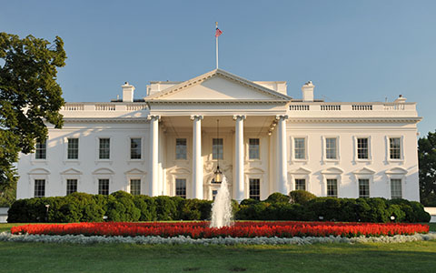

Executive Branch
Carries out laws (President, Vice President, Cabinet)
The executive branch carries out and enforces laws. It includes the President, Vice President, the Cabinet, executive departments, independent agencies, and other boards, commissions, and committees.
About the Executive BranchClick here to learn more about the 45 Presidents of the U.S.
The Executive Office of the President has responsibility for tasks ranging from communicating the President's message to the American people to promoting the country's trade interests abroad.
Executive Departments
The 15 executive departments are the primary units of the executive branch of the federal government of the United States.
Test your knowledge of the executive branch by taking a short quiz here